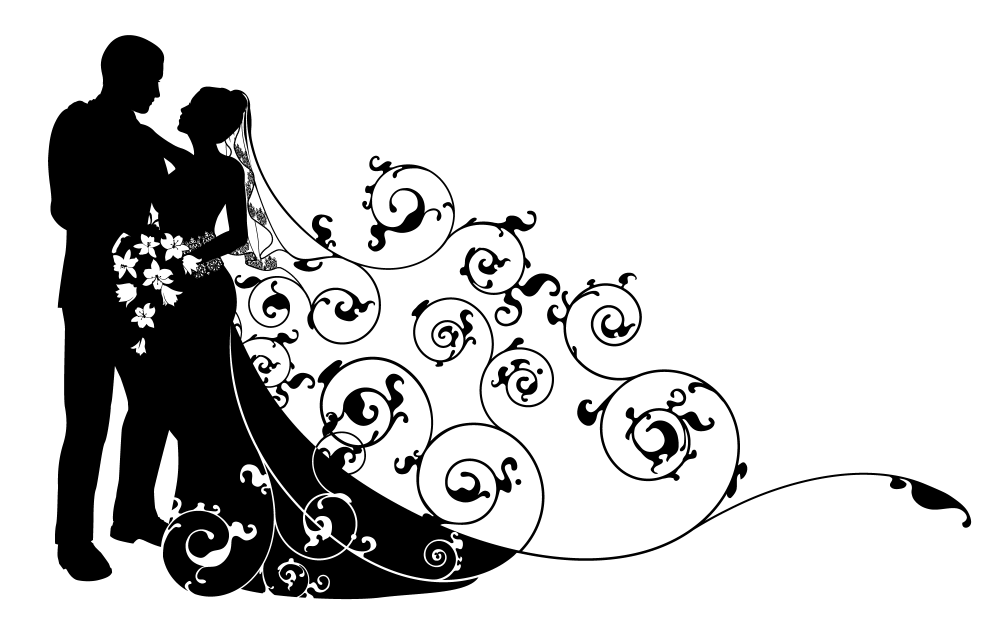

StefanaAlin

Turism
Profitati de ocazia nuntii noastre pentru a descoperi bogatiile si imprejurimile Lyon-ului.
Pentru a va pregati vizita va propunem sa vizitati site-ul oficiului de turism
Locurile noastre preferate
- Parcul Tête d'Or
- Orasul vechi, cheile Rhônului, cheile Saônei
- Strada Mercière ("strada gastronomiei")
Ruta Romania - Lyon
- cu masina : pentru cei mai curajosi, cu disponibilitati mai ample si doritori de a descoperi si alte locuri in drum spre Lyon
- cu avionul : pentru cei mai nerabdatori de a ajunge pe meleagurile frantuzesti
Sugestii
Cazare Lyon
Lyon-ul ofera foarte multe posibilitati de cazare. Noi va sugeram hotelurile din apropierea domiciliului nostru
- la 200 m → Hôtel Ibis Budget Croix-Luizet/Villeurbanne : 3 Rue du 8 Mai 1945, 69100 Villeurbanne
- la 1,5 km → Hôtel Ibis Style Lyon/Villeurbanne : 130 Boulevard du 11 Novembre 1918, 69100 Villeurbanne
- sau in afara Lyon-ului exact in cadrul Restaurantului Chez Nous unde vom petrece : (la 25 km de Lyon)